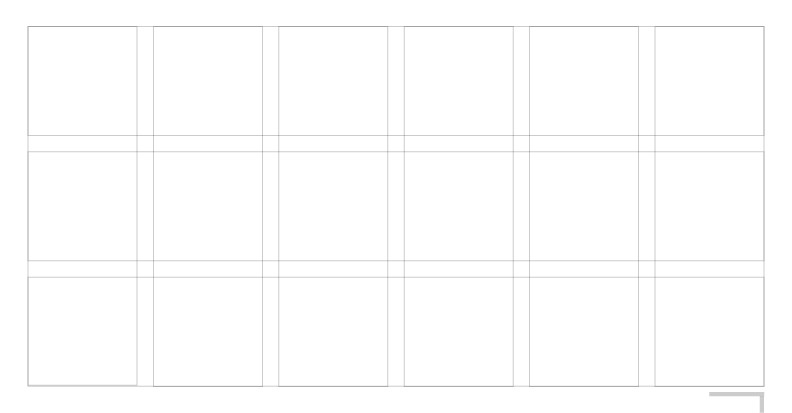
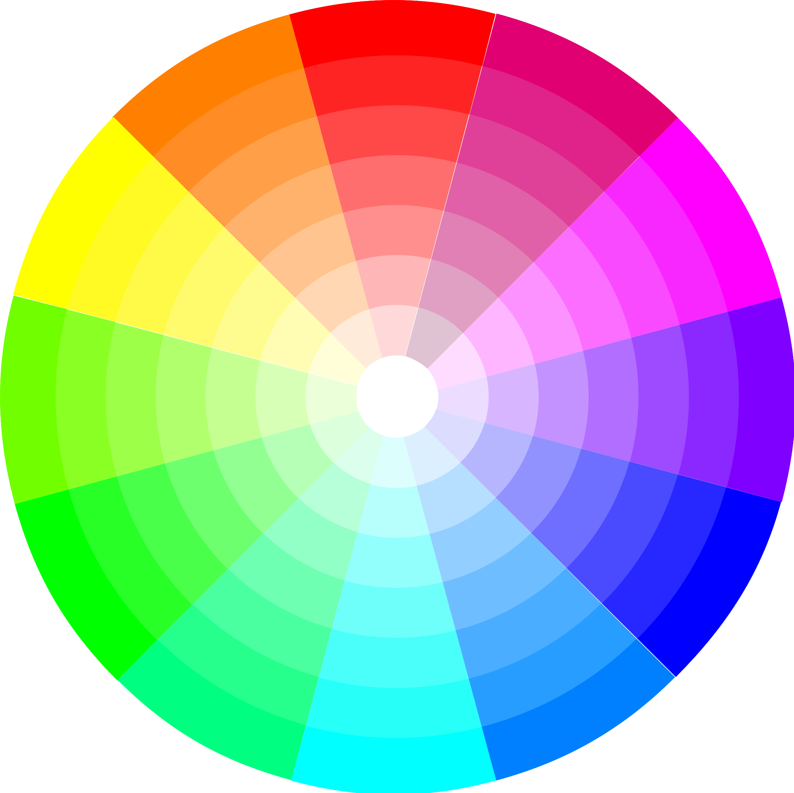

Computers Are
Used By Humans
Elements of Web Design
- Grid
- Color
- Typography
- Usability
- Responsiveness
Grid
4 Tenets of Grids
- Clarity
- Efficiency
- Economy
- Continuity
Anatomy
Columns
Columns are the vertical sections of a grid. The more columns in the grid the greater its flexibility.
Rows
Rows are the horizontal sections of a grid. They are often omitted in web design. Grids with rows and columns are called modular grids.
Regions
Regions are groupings of columns, rows, or modules that form an element of a composition.
Gutters
Columns and rows are divided by gutters. The tighter the gutter, the more visual tension is created. Grids with wide gutters produce calming layouts because the elements of the composition have less tension between them.
Margins

Margins are the space outside of the grid columns and rows. Not to be confused with padding, which is the space within rows and columns.
Flowline
Flowlines are typically used to break up sections of a composition. They create natural stopping and starting places in the design.
Marker
A marker is the area that secondary content is placed. Books commonly house chapter titles, page numbers, etc. in the marker area.
Grid Types
- Hierarchial
- Manuscript
- Column
- Modular
Hierarchial
The hierarchical grid is an intuitively constructed grid that focuses on the proportions of the elements in the design. This type of grid is often used when the content isn’t standardized and repetitive.
Manuscript
The manuscript grid is the oldest type of grid used in print media. It typically presents itself as a standardized rectangle that contains the content on a page or screen.
Column
The column grid is by far the most used grid in web design because the width of a screen is finite, unlike the height, which can go on forever if the user has the ability to scroll. Most column grids used on the web are 12 columns, but that shouldn’t stop designers and developers from exploring alternatives.
Modular
The modular grid is devised by overlapping rows and column that form modules. The modular grid is the most complex type of grid. It should be used when vertical and horizontal space are of equal concerns. This type of grid is becoming more popular in digital media with the onset of wearable devices that rely on ‘cards’ to communicate.
Color
Color Theory
The interaction of colors in a design through complementation, contrast, and vibrancy.
- Complementation
- Contrast
- Vibrancy
Complementation
Complementation refers to the way we see colors in terms of their relationships with other colors.
Contrast
Contrast reduces eyestrain and focuses user attention by clearly dividing elements on a page.
Vibrancy
Vibrancy dictates the emotion of your design. Brighter colors lead the user to feel more energetic as a result of your design, which is particularly effective when you are trying to advertise a product or gain an emotional response. Darker shades relax the user, allowing their mind to focus on other things.
Tools
By experimenting in a guided environment, we are able to learn how to apply these principles without becoming frustrated when things are not working perfectly. Think of these tools as a sort of “color theory safety net”, to help you explore your own creativity without ever needing to stray far from the established rules for pleasing color combinations.
Summary
- Choosing colors on opposite ends of the spectrum creates a visual harmony for the eyes.
- A high contrast between elements makes text easily readable, and guides your reader's attention.
- The brighter the colors, the more mental energy they will consume.
- Don't be afraid to use tools such as Kuler and Color Scheme Designer 3, they only make your life easier and prevent you from becoming frustrated with the learning process.
Typography
Print vs Web
- Print typography, once set and printed, will always look the same in production.
- Web typography renders differently on every screen (with differing factors such as operating systems, browsers, and widely varying screen sizes).
Web Typography
Typography on the web isn't just about choosing the latest pretty font; readability, usability and cross-device scalability must be balanced with aesthetics.
Communication
Typography is above all a form of communication, a poorly communicated message is hard to understand and makes our brain hurt. We will learn the importance of typography in communicating a clear message as well as being the basis of the web as we know it.
Make it Easy
Don't alienate people by making your content difficult to read, well designed and readable typography is the basis of the web and a good user experience. We will learn how to make their content readable across multiple devices.
Suggested Reading and Tools
Usability
5 Qualities
- Learnability
- Efficiency
- Memorability
- Errors
- Satisfaction
Learnability
How easy is it for users to accomplish basic tasks the first time they encounter the design?
Efficiency
Once users have learned the design, how quickly can they perform tasks?
Memorability
When users return to the design after a period of not using it, how easily can they reestablish proficiency?
Errors
How many errors do users make, how severe are these errors, and how easily can they recover from the errors?
Satisfaction
How pleasant is it to use the design?
The 6th Quality
Utility
Does it do what users need?
- Definition of Utility = whether it provides the features you need.
- Definition of Usability = how easy & pleasant these features are to use.
- Definition of Useful = usability + utility.
Why Usability is Important
- If a website is difficult to use, people leave.
- If a user cannot find your product, they can’t buy it either.
- If you slow a user down, you cost them time & money.
Work on Usability
- Test the old design to identify the good parts that you should keep or emphasize, and the bad parts that give users trouble.
- Test your competitors’ designs to collect information on a range of alternate interfaces.
- Conduct a field study to see how users behave in their natural habitat.
- Make paper prototypes of one or more design ideas and test them.
- Inspect the design relative to established usability guidelines whether from your own earlier studies or published research.
- Once you decide on and implement the final design, test it again. Subtle usability problems always creep in during implementation.